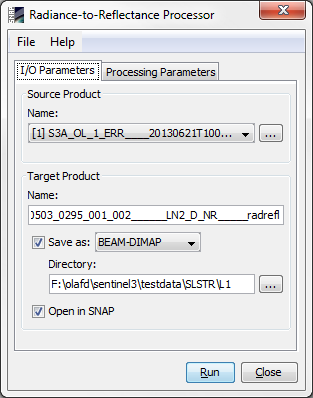

| SNAP Data Processors - Radiance-to-Reflectance Processor - Processor Description |
|

Name: Used to select the spectral source product. The source product shall contain spectral bands providing a source spectrum at each pixel. Use the ... button to open a data product currently not opened in the Sentinel Toolbox.
Name: Used to specify the name of the target product.
Save to: Used to specify whether the target product should be saved to the file system. The combo box presents a list of file formats.
Open in SNAP: Used to specify whether the target product should be opened in the Sentinel Toolbox. When the target product is not saved, it is opened in the Sentinel Toolbox automatically.

Sensor:
The corresponding sensor. The processor currently supports OLCI, SLSTR and MERIS.
The sensor must be selected from the drop-down menu. The default sensor is 'OLCI'.
Conversion mode:
Specifies if the conversion shall be from radiances to reflectances or backwards.
The conversion mode has one of the values 'RAD_TO_REFL', 'REFL_TO_RAD' and must be selected
from the drop-down menu. The default conversion mode is 'RAD_TO_REFL'. (Currently the 'REFL_TO_RAD'
mode is just a placeholder and only supports input products which were generated with this
processor using the 'RAD_TO_REFL' mode.)
Copy non spectral bands:
If set, all non-spectral bands from the source product are written to target product. Note that this might be time
consuming i.e. in case of large OLCI or SLSTR products.
The default value is 'false'.